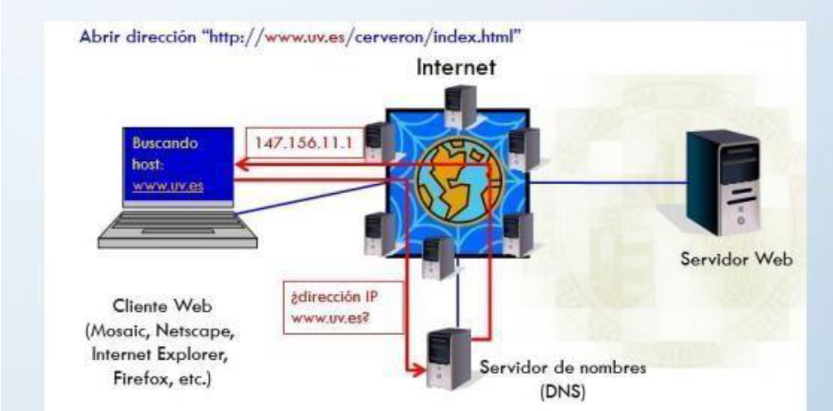
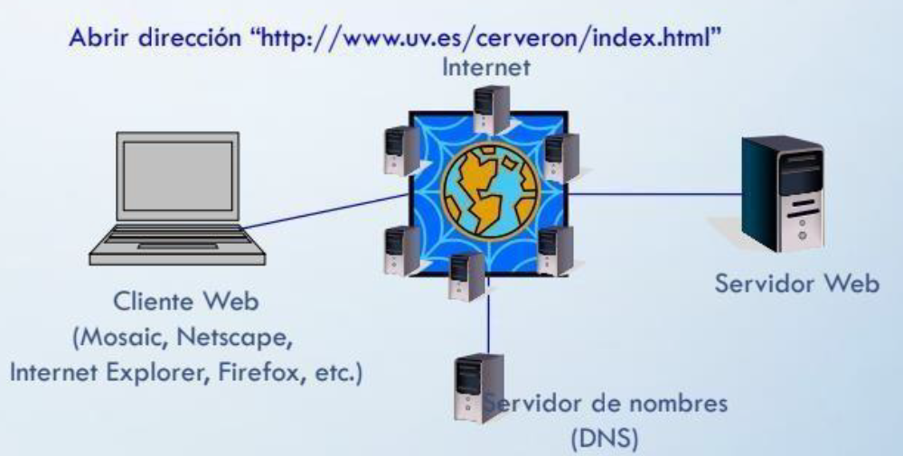

Como Funciona la Web
- Para poder visualizar una página web es preciso:
Tener un ordenador conectado a Internet:
Establecer una conexión PPP con la máquina del ISP.
El ordenador recibe una dirección IP temporal
Usando DHCP (Dynamic Host Configuration Protocol)
El ordenador recibe la dirección de un servidor de nombres (DNS, Domain Name Server)
- Iniciar sesión en un navegador Web (ej.: Internet Explorer, Mozilla, Netscape,etc.).
- Indicar al navegador el URL de la página que se desea "visitar".
- El navegador pide al DNS la dirección IP correspondiente al servidor quecontiene el documento cuyo URL se ha indicado.
- El navegador abre una sesión TCP con la máquina cuya dirección IP se haobtenido.
- El navegador solicita al servidor que le transmita el documento (orden GET).
- El servidor web envía el documento.
- La conexión TCP finaliza.
- El navegador muestra el documento.

